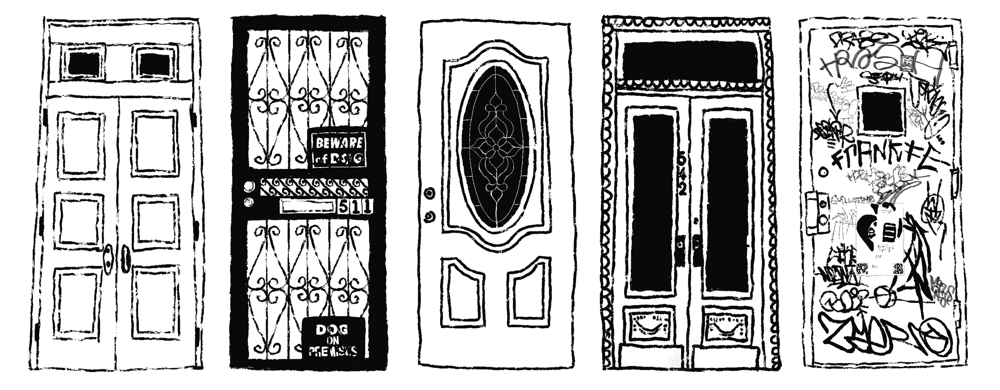

The meaning of what was once thought to represent a city's heart and soul is fading. There appears to be a significant decline in artistic freedom and creativity amongst today’s architects, resulting in cities like Sweden, Hungary, and Norway, amongst others, beginning to look identical. “Is this really an issue?”, one might wonder. Many would insist it is. The character of cities around the world is being lost as a result of architects and engineers' unwillingness to take risks, challenge conventional wisdom, and create something truly unique. This is happening across Europe, for example, the UK, as reported by London Inheritance, has begun to tear down its iconic red telephone boxes and replace them with more basic and practical booths, contributing to the loss of rich architectural history and landmarks. This is a problem that affects not only those in the field of architecture, but the entire world. Architects take on the role of storytellers with the architecture serving as the storytelling technique. Rome's Colosseum, which depicts ancient Roman culture and features gladiatorial combat and entertainment, is one noteworthy example. The building itself is a testament to the majesty and strength of the Roman Empire. A building's walls display the changes that have occurred over time, evolving cultures, and the characteristics of a particular lifestyle. There does not appear to be a dominant architectural style in the 21st century, but contemporary architecture, as it is known, has taken over in recent decades. In contrast to other architectural eras, this modern style is not a movement and does not signify an age, though it is said to be influenced by earlier movements. In retrospect, people may wonder if architecture is following a limited path toward trends in aesthetics and functionality as a result of these vastly dissimilarly structured buildings coexisting in cities all around them. This may explain why we tend to be less drawn to contemporary architecture compared to the architecture in older areas of cities and towns. Although exposure to a variety of influences may have contributed to this, technological advancements within the industry have also had a positive and negative impact. This evolution of architecture is greatly influenced by technology. Though the industry should welcome any advancement, it is important to realize that these changes will affect how architects create designs, sequence models, and stumble upon inspiration. This frequently serves as a metaphor for changes between architectural eras. It has affected the methods used by architects to complete and develop projects. Prior to a few years ago, almost all architectural tasks were performed manually, this included hand drafting, rendering, and sketching. This, compared to current methods, was significantly slower and more ineffective. However, there comes the loss of cultural identity and the human element with these technological innovations. The human touch is fading, and creativity along with it as architects become more dependent on technology. Nevertheless, there are other factors at play that influence architects' preferences for this architectural style. Government regulations and the need for cheaper materials have also limited the kinds of designs that architects can come up with. According to a New York Times article, 420,000 apartment buildings were constructed in the United States, setting a new record. What's intriguing is that these structures were all constructed with a similar boxy, mid-rise, and bulky design, frequently in the middle of cities. And oftentimes, these buildings are left with a design that is considered to be more clean, basic, and essentially artless than a more unique one from a few decades ago. With these new building designs, however, comes demolition after only a few years of use to make room for more trending, fashionable, and economically sound structures. This is also the result of using cheaper materials to construct a building that was overall quicker and more inexpensive. According to The Atlantic, between 200,000 and 300,000 apartment buildings are destroyed every year in the United States alone, exposing cities to long-lasting dust and carbon emissions. Another significant drawback is that many families are evicted from their homes and are left to find new housing, which tends to be more expensive. This in its entirety highlights the underlying issues with building developers, particularly how architects are constrained to creating only these bland designs with the sole consideration of affordability, without taking into account the building's lifespan, the occupants, the architectural style of the city in which it is located, or the effects that come with its deconstruction. Although it might be simpler to put the blame for all these changes in the architectural industry on architects, it is not that straightforward. Building construction and design involve many steps. Today's building developers and the government have neglected to embrace what was once such beautiful art and a way for architects to use their special abilities to create. This raises many concerns about whether buildings designed by famous architects like Zaha Hadid, Santiago Calatrava, or Frank Lloyd Wright will be accepted by society in the future. People, and architects in particular, must accept that architecture is a dying art that, if neglected or ignored, will vanish and eventually create a world in which buildings may not even be noticeably different. And as renowned Dutch architect Reinier De Graaf wrote in his book, architect, verb: The New Language of Building, as he discussed contemporary architecture and its ills, “a quest for architecture to be architecture again, written in the sincere hope that, in ridding it of unsolicited baggage, our profession might one day re-emerge as an independent and critical discipline.” (De Graaf 234).